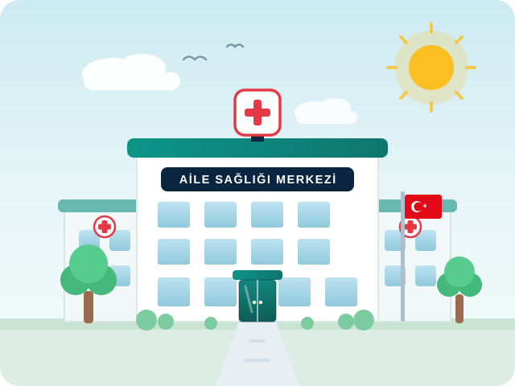

İletişim
Bize aşağıdaki kanallardan ulaşabilir veya çalışma saatleri içinde merkezimizi ziyaret edebilirsiniz.
Çalışma Saatlerimiz
Merkezimizin hizmet saatleri aşağıdadır| Hafta içi (Sabah) | 08:00 – 12:30 |
|---|---|
| Öğle Arası | 12:30 – 13:30 |
| Hafta içi (Öğleden Sonra) | 13:30 – 17:00 |
| Laboratuvar (Numune Alımı) | 08:30 – 11:30 |
| Cumartesi | Kapalı |
| Pazar | Kapalı |
Yardımcı Telefonlar
Önemli Telefon Numaraları
İhtiyaç duyabileceğiniz resmi sağlık hattı ve kurum telefonları.
Ulaşım
Merkezimize Nasıl Ulaşırsınız?
Merkezimiz Yenişehir merkezinde, toplu taşıma araçlarına yürüme mesafesindedir. Engelli rampamız ve asansörümüz bulunmaktadır.
-
Otobüs: 305, 407 ve 413 numaralı hatlar ile "Sağlık Caddesi" durağında ininiz; merkezimiz 2 dakikalık yürüme mesafesindedir.
-
Metro: M1 hattı "Yenişehir" istasyonundan çıkıp 8 dakikalık yürüyüş ile merkezimize ulaşabilirsiniz.
-
Özel Araç: Merkezimiz önünde ziyaretçilerimiz için ücretsiz otopark alanı bulunmaktadır.

Önemli: Web sitemiz üzerinden randevu alınmamaktadır. Randevu için
MHRS'yi
veya 182'yi kullanınız. Acil durumlarda 112'yi arayınız.